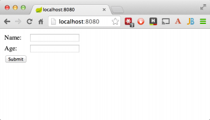

Спасибо огромное за статью! Но зачем два блока файла pom.xml если они идентичные? Или я ошибаюсь ?
Также на Spring по-русски!
Доступ к данным через JPA
- 6 лет назад
- 4 комментариев
Этот урок освещает процесс создания приложения, которое …
Обмен сообщениями с Redis
- 6 лет назад
- 2 комментариев
Обмен сообщениями с Redis Этот урок освещает процесс использования …
Создание RESTful web-сервиса с …
- 6 лет назад
- 3 комментариев
Создание RESTful web-сервиса с Spring Boot Actuator Spring Boot …

Проверка введенных данных
- 6 лет назад
- 2 комментариев
Этот урок освещает процесс создания web-приложения с …
Подготовка web-контента Spring MVC
- 6 лет назад
- 18 комментариев
Подготовка web-контента Spring MVC Этот урок освещает процесс …
Создание приложений с …
- 6 лет назад
- 7 комментариев
Создание приложений с Spring Boot Этот урок показывает пример …
- Рекомендовать Рекомендовано 6
- Найти больше обсуждений
Обсуждение рекомендовано!
Рекомендация означает, что обсуждение стоит того, чтобы им поделиться. Вы поделитесь им со своими подписчиками в лентах Disqus и добавите славы её создателю.
- ТвитнутьПоделиться
- Старое в начале

wertklop Модератор Павел Попов • 5 лет назад показать большеПавел, вы правы, они идентичные, но если вы посмотрите оригинальный урок, то обнаружите так же дублирование. Скорее всего это было сделано с целью логической целостности, т.е. как должно быть в начале и к чему пришли в итоге, это как я понимаю
Михаил Чеботарев wertklop • 3 года назад показать большеМодератор, на оригинальном сайте уже исправили: вот теперь конфиги правда показывают "как должно быть в начале и к чему пришли в итоге"
Cadfael • 5 лет назад • edited показать большеОкей, мы импортировали ("org.joda.time.LocalTime;") в нашем мэйн-классе, "обновили" xml, но где взять саму библиотеку? При запуске собранного jar файла, с предварительным редактированием манифеста (добил ссылку на мэйн-класс в конце: "Main-Class: hello.HelloWorld"), JVM, естественно, ругается на отсутствие необходимой библиотеки. Ошибка:
Exception in thread "main" java.lang.NoClassDefFoundError: org/joda/time/LocalTime at hello.HelloWorld.main(HelloWorld.java:7)wertklop Модератор Cadfael • 5 лет назад • edited показать большеВообще-то, Maven загружает из своего репозитория эту библиотеку. Не знаю точно, почему у вас такая ситуация, но я ещё раз проверил, у меня после команды "mvn package" появляется в каталоге target jar-файл gs-maven-0.1.0, который благополучно запускается командой "java -jar gs-maven-0.1.0" с последующим выводом на консоль времени и приветствия. И это без всякого редактирования манифеста(который создается автоматически)
Cadfael wertklop • 5 лет назад • edited показать большеЯ после того, как написал сообщение, понял свою ошибку. Я использовал Maven, что был установлен вместе с IDEA (".\JetBrains\IntelliJ IDEA 14.1.4\plugins\maven\lib\"). Внутри не обнаружилось не одной библиотеки, где присутствовало бы слово "Joda" или что-то похожее, т.е. ее там просто нет. И возможно поэтому же мой jar пакуется не правильно (из-за отсутствия чего-то необходимого). Манифест в созданном jar-е присутствует, но его содержание:
Manifest-Version: 1.0
Archiver-Version: Plexus Archiver
Created-By: Apache Maven
Built-By: ****
Build-Jdk: 1.8.0_45Из-за этого же он сначала не хотел запускаться (первый пример с приветствием), пока я не поправил его винрарором до такого вида:
Manifest-Version: 1.0
Archiver-Version: Plexus Archiver
Created-By: Apache Maven
Built-By: ****
Build-Jdk: 1.8.0_45
Main-Class: hello.HelloWorldА второй пример без библиотеки Joda, у меня точно никак не заработает. Мне из интереса хотелось бы найти эту библиотеку и попробовать подсунуть ее IDEA, в попытке таки завести jar со второго примера.
З.Ы. Я правил и запускал оригинальный jar. : D
З.З.Ы. Скачал обычный Maven, запаковал им и запустил, всё работает.
З.З.З.Ы. Попробовал Mavenom-ом из IDEA, тоже работает, просто не стоило зацикливаться на оригинальном jar-е (он меня привлек своим малым размером).
З.З.З.З.Ы. Спасибо за статью.
Илья • 5 лет назад показать большеНе получается скомпилировать проект,добавляем в pom.xml весь набор,но на билде выдаёт Build Failure и к тому же Эклипс подчеркивает joda как некорректно вызванные.
[INFO] Scanning for projects...
[INFO] ------------------------------------------------------------------------
[INFO] BUILD FAILURE
[INFO] ------------------------------------------------------------------------
[INFO] Total time: 0.173 s
[INFO] Finished at: 2015-07-13T23:10:03+03:00
[INFO] Final Memory: 5M/111M
[INFO] ------------------------------------------------------------------------
[ERROR] No goals have been specified for this build. You must specify a valid lifecycle phase or a goal in the format <plugin-prefix>:<goal> or <plugin-group-id>:<plugin-artifact-id>[:<plugin-version>]:<goal>. Available lifecycle phases are: validate, initialize, generate-sources, process-sources, generate-resources, process-resources, compile, process-classes, generate-test-sources, process-test-sources, generate-test-resources, process-test-resources, test-compile, process-test-classes, test, prepare-package, package, pre-integration-test, integration-test, post-integration-test, verify, install, deploy, pre-site, site, post-site, site-deploy, pre-clean, clean, post-clean. -> [Help 1]
[ERROR]
[ERROR] To see the full stack trace of the errors, re-run Maven with the -e switch.
[ERROR] Re-run Maven using the -X switch to enable full debug logging.
[ERROR]
[ERROR] For more information about the errors and possible solutions, please read the following articles:
[ERROR] [Help 1] http://cwiki.apache.org/con...
Вижу,что прописать надо что-то перед компиляцией,но пока не доходит что.С Мавеном впервые.
wertklop Модератор Илья • 5 лет назад показать большестандартная команда для сборки: mvn clean install
обычно, этого достаточно для начала работы(с существующим pom.xml), в противном случае, вам стоит покопаться с настройками eclipse.
wertklop Модератор viktor • 5 лет назад показать большеБлагодарю, viktor, вы правы, опечатку исправил. Хотя это изначально опечатка в оригинальном уроке)))
itfs • 4 года назад показать большеСпасибо. Испытывал проблемы с компиляцией из-под windows (No sources to compile) пока не догадался вставить в pom.xml <sourcedirectory>./</sourcedirectory>
Хамидилло Мамытов • 4 года назад показать большеСпасибо за урок! Я совсем начинающий, и у меня после компиляции в папке target нету файлов .jar они все так - же .class. И вообще все равно не понятно зачем MAVEN? Ни один из авторов не удосужился собрать эту мозаику определений(на пальцах)..для чего все это..я понимаю в начале обучения эти вопросы свойственны, но все же. Например чем компилятор мавена отличается от обычного?
wertklop Модератор Хамидилло Мамытов • 4 года назад показать большеЗдравствуйте!
После компиляции у вас и не появится jar-файл, для этого есть команда package, это также описано в переводе. По поводу назначения maven, gradle и других систем сборок, то все они предназначены для автоматизации и облегчения процесса сборки в различных средах(опер. системах) и окружениях(сервера приложений, контейнерах и т.п.), а также выполнения каких-либо дополнительных действий, например, перед компиляцией проекта генерацию java-классов на основе xsd-схем. Компилятор мавена ничем не отличается от обычного, потому что используется один и тот же "обычный" компилятор, вопрос в удобстве использования. Например, в любой IDE достаточно нажать на кнопку запуска приложения, за вас все скомпилируется и запустится, а вот когда вы сделаете коммит и вам нужно на удаленном сервере выполнить перекомпиляцию обновление приложения, то из IDE уже сложнее будет это сделать, да и никто так не делает, это неудобно. Как вы сами признались, вы совсем начинающий, поэтому все эти знания и понимание придут с опытом. Удачи!Sergey Orlov wertklop • 4 года назад • edited показать большеMaven это не компилятор, а сборщик. Вы можете писать сами долгие строки по многу раз после каждых изменений в ваших файлах java обращаясь к компилятору джава javac, а можете быстро и повторно использовать пом.xml коротко описав что вы хотите, остальное мавен сделает за вас. создат каркас структуры папок проекта, подгрузит зависимости из инетного или из вашего локального репозитория, в нужную папку все положит, в нужный формат все упакует, на сервер все задеплоит и т.п.
wertklop Модератор Sergey Orlov • 4 года назад • edited показать большеДа, вы правы, что я упомянул, что у мавена есть компилятор было неточность, правильнее сказать, что мавен сам обращается к javac на этапе компиляции проекта
Миша Guest • 4 года назад • edited показать большеу меня после компиляции не появляются файлы .class
после mvn package появляется папка таргет, но при запуске командой "java -jar gs-maven-0.1.0" выдает unable to access jarfile.disqus_Uh9wtPx3Ih Миша • 3 года назад показать большеУ меня была такая же ошибка, попробуйте указать явно расширение jar, то есть java -jar gs-maven-0.1.0.jar
wertklop Модератор Pavel Lukyanskiy • 3 года назад показать большеЕсли вкратце, то для того, чтобы в jar-файле были классы ваших зависимостей, как буд-то это ваши классы, в противоположность наличию каталога lib, в котором был бы jar-файл библиотека, в частности, joda-time
Лев Садовский • 3 года назад • edited показать больше"Если всё было сделано правильно, то вы увидите сообщение примерно такого **сожкржания**:"
Слово "сожкржания" в самом начале, где про установку maven'а
Марія Алексова • 2 года назад • edited показать большеЕсть Jar-архивы для подключения к базам. Пример подключения:
<dependency>
<groupid>ojdbc8</groupid>
<artifactid>com.oracle</artifactid>
<version>1.0</version>
<scope>system</scope>
<systempath>${project.basedir}/src/main/resources/ojdbc8.jar</systempath>
</dependency>При запуске во встроенном Томкате Интеллиджи через Application --> run все отлично работает, то есть зависимости определены нормально.
По ТЗ требуется сделать варник для Томкат8. Когда делаешь его через плагин вар начинаются проблемы, так как Jar-архивы не появляются в WEB-INF/libs и Томкат локальный не встроенный начинает сыпать ClassDefNotFoundException. После добавления джаров в папку Томката libs ошибками сыпать перестает и начинает работать правильно, то есть баги в самом проекте тоже исключаются. Но сделать это с продовым Томкатом я не могу. Поэтому надо разместить их в WEB-INF/libs в варе.
У вас написано, что в WEB-INF/libs зависимости размещаются со scope compile, но сделать scope compile c зависимостями с машины нельзя, мавен начинает ругаться и требовать scope system. Как добавить в WEB-INF/lib джар со scope system?<project xmlns="http://maven.apache.org/POM..." xmlns:xsi="http://www.w3.org/2001/XMLS..." xsi:schemalocation="http://maven.apache.org/POM... http://maven.apache.org/xsd...">
<modelversion>4.0.0</modelversion><groupid>ukrposhta.ua</groupid>
<artifactid>motorolla</artifactid>
<packaging>war</packaging><name>motorolla</name>
<description>Motorolla scanner server</description><parent>
<groupid>org.springframework.boot</groupid>
<artifactid>spring-boot-starter-parent</artifactid>
<version>1.5.8.RELEASE</version>
<relativepath/>
</parent><properties>
<project.build.sourceencoding>UTF-8</project.build.sourceencoding>
<project.reporting.outputencoding>UTF-8</project.reporting.outputencoding>
<java.version>1.8</java.version>
</properties><dependencies>
<dependency>
<groupid>org.springframework.boot</groupid>
<artifactid>spring-boot-starter-web-services</artifactid>
</dependency>
<dependency>
<groupid>wsdl4j</groupid>
<artifactid>wsdl4j</artifactid>
</dependency><dependency>
<groupid>org.springframework.boot</groupid>
<artifactid>spring-boot-starter-test</artifactid>
<scope>test</scope>
</dependency>
<dependency>
<groupid>oraUcp</groupid>
<artifactid>com.oracle</artifactid>
<version>1.0</version>
<scope>system</scope>
<systempath>${project.basedir}/src/main/resources/ucp.jar</systempath>
</dependency>
<dependency>
<groupid>ojdbc8</groupid>
<artifactid>com.oracle</artifactid>
<version>1.0</version>
<scope>system</scope>
<systempath>${project.basedir}/src/main/resources/ojdbc8.jar</systempath>
</dependency>
<dependency>
<groupid>org.springframework</groupid>
<artifactid>spring-jdbc</artifactid>
<version>5.0.0.RELEASE</version>
</dependency><dependency>
<groupid>org.springframework</groupid>
<artifactid>spring-tx</artifactid>
<version>5.0.0.RELEASE</version>
</dependency></dependencies>
<build>
<plugins>
<plugin>
<groupid>org.springframework.boot</groupid>
<artifactid>spring-boot-maven-plugin</artifactid>
</plugin><plugin>
<groupid>org.codehaus.mojo</groupid>
<artifactid>jaxb2-maven-plugin</artifactid>
<version>1.6</version>
<executions>
<execution>
<id>xjc</id>
<goals>
<goal>xjc</goal>
</goals>
</execution>
</executions>
<configuration>
<schemadirectory>${project.basedir}/src/main/resources/xsd</schemadirectory>
<outputdirectory>${project.basedir}/src/main/java</outputdirectory>
<clearoutputdir>false</clearoutputdir>
</configuration>
</plugin></plugins>
<finalname>${project.artifactId}</finalname>
</build></project>
wertklop Модератор Марія Алексова • 2 года назад показать большеПризнаться, ничего не понял из вашего описания проблемы, приведите хотя бы пример ваших pom-файлов. Подозреваю, что у вас просто некорректное объявление зависимостей
Марія Алексова wertklop • 2 года назад показать большеЕсть проект. В него добавила два jar файла для работы с базой. Пример зависимости:
<dependency>
<groupid>oraUcp</groupid>
<artifactid>com.oracle</artifactid>
<version>1.0</version>
<scope>system</scope>
<systempath>${project.basedir}/src/main/resources/ucp.jar</systempath>
</dependency>
Скомпилировала, запустила приложение через Application.class в Интеллиджи - все отлично работает, зависимости видит, проект собирается и работает на встроенном Томкате в Идее. То есть сами по себе зависимости объявлены правильно, иначе проект бы не запустился.
ТЗ предполагает запуск приложения через war на Tomcat на сервер. При сборке war через плагин Мавен джары из зависимостей не добавляет в WEB-INF/libs, из-за чего появляется ClassDefNotFoundException. После добавления в {CATALINA_HOME}/libs jar файлов из зависимостей проект начинает работать нормально. Но сделать такой финт ушами на корпоративном сервере я, понятно, не могу.У вас написано, что скоуп зависимостей для включения в WEB-INF/libs должен быть compile, но при объявлении их compile зависимость мавена "ломается" и начинает подсвечиваться красным. При попытке скомпилировать начинает появлятся консольное сообщение от мавена 'dependencies.dependency.systemPath' for oraUcp:com.oracle:jar must be omitted. This field may only be specified for a dependency with system scope. Какой есть способ поместить джары со скоупом system в WEB-INF/libs сборке варникa? Предполагаю, что есть какой-то плагин. До этого работала с градлом, поэтому с такой проблемой не сталкивалась, но сейчас требуется мавен.
<project xmlns="http://maven.apache.org/POM..." xmlns:xsi="http://www.w3.org/2001/XMLS..." xsi:schemalocation="http://maven.apache.org/POM... http://maven.apache.org/xsd...">
<modelversion>4.0.0</modelversion><groupid>ukrposhta.ua</groupid>
<artifactid>motorolla</artifactid>
<packaging>war</packaging><name>motorolla</name>
<description>Motorolla scanner server</description><parent>
<groupid>org.springframework.boot</groupid>
<artifactid>spring-boot-starter-parent</artifactid>
<version>1.5.8.RELEASE</version>
<relativepath/>
</parent><properties>
<project.build.sourceencoding>UTF-8</project.build.sourceencoding>
<project.reporting.outputencoding>UTF-8</project.reporting.outputencoding>
<java.version>1.8</java.version>
</properties><dependencies>
<dependency>
<groupid>org.springframework.boot</groupid>
<artifactid>spring-boot-starter-web-services</artifactid>
</dependency>
<dependency>
<groupid>wsdl4j</groupid>
<artifactid>wsdl4j</artifactid>
</dependency><dependency>
<groupid>org.springframework.boot</groupid>
<artifactid>spring-boot-starter-test</artifactid>
<scope>test</scope>
</dependency>
<dependency>
<groupid>oraUcp</groupid>
<artifactid>com.oracle</artifactid>
<version>1.0</version>
<scope>system</scope>
<systempath>${project.basedir}/src/main/resources/ucp.jar</systempath>
</dependency>
<dependency>
<groupid>ojdbc8</groupid>
<artifactid>com.oracle</artifactid>
<version>1.0</version>
<scope>system</scope>
<systempath>${project.basedir}/src/main/resources/ojdbc8.jar</systempath>
</dependency>
<dependency>
<groupid>org.springframework</groupid>
<artifactid>spring-jdbc</artifactid>
<version>5.0.0.RELEASE</version>
</dependency><dependency>
<groupid>org.springframework</groupid>
<artifactid>spring-tx</artifactid>
<version>5.0.0.RELEASE</version>
</dependency></dependencies>
<build>
<plugins>
<plugin>
<groupid>org.springframework.boot</groupid>
<artifactid>spring-boot-maven-plugin</artifactid>
</plugin><plugin>
<groupid>org.codehaus.mojo</groupid>
<artifactid>jaxb2-maven-plugin</artifactid>
<version>1.6</version>
<executions>
<execution>
<id>xjc</id>
<goals>
<goal>xjc</goal>
</goals>
</execution>
</executions>
<configuration>
<schemadirectory>${project.basedir}/src/main/resources/xsd</schemadirectory>
<outputdirectory>${project.basedir}/src/main/java</outputdirectory>
<clearoutputdir>false</clearoutputdir>
</configuration>
</plugin></plugins>
<finalname>${project.artifactId}</finalname>
</build></project>
Марія Алексова wertklop • 2 года назад • edited показать большеКогда добавила руками jar-файлы в {projectbasedir}/target/motorolla/WEB-INF/libs в варнике они появились и на Томкате все собралось и запустилось, но это скорее костыль, а не выход. Так что все равно буду рада решению этой проблемы через Мавен
wertklop Модератор Марія Алексова • 2 года назад показать большеТак я вам о том и говорю, что вы не руками должны добавлять зависимости, а в вашем pom.xml должно быть прописано, какие зависимости добавлять, чтобы в конечном war-файле все было, как надо
Марія Алексова wertklop • 2 года назад показать большеЯ более подробно расписала проблему в первом комментарии, посмотрите пожалуйста
wertklop Модератор Марія Алексова • 2 года назад показать больше1)для шаринга кода удобнее и правильнее использовать более подходящие варианты представления, например gist на github
2)вы точно уверены, что вам нужен system scope, а не provider или вообще не его указывать? Если пробовали, то какой получался результат?
3)обратите внимание на Apache Maven WAR Plugin, может он вам чем-то пригодитсяМарія Алексова wertklop • 2 года назад показать большеНа provided или compile(default, то есть не указанный) ругается 'dependencies.dependency.systemPath' for oraUcp:com.oracle:jar must be omitted. This field may only be specified for a dependency with system scope. Проект на gitlab, там такой опции не нашла.
wertklop Модератор Марія Алексова • 2 года назад показать большеВ таком случае, если я правильно понял вас, то вам нужно убрать scope и systemPath, но при этом сделать одно из:
1)поместить вашу библиотеку в папку ресурсов и копировать ее в /WAR/lib, см. https://stackoverflow.com/a.... Скорее всего это вам как раз и подойдет
2)деплоить библиотеку в доступный вам nexus-репозиторий, который нужно будет указать в pom.xml в блоке <repositories/>
Simon Logic • 2 года назад показать большеОткуда в имени выходного файла слово "initial", если в ПОМнике (в частности в имени артифакта) его нет? Еще неплохо было бы пошире объяснить про различие областей provided и compile. Я правильно понял, что разница только в том, попадет ли зависимость в выходной архив или нет? При компиляции зависимый пакет все равно должен находиться в репозитории m2. Так?
Alibek Akbar • 2 года назад • edited показать большеЗдравствуйте!
Все делал по уроку, но при компилировании получил ошибку:
[ERROR] Failed to execute goal org.apache.maven.plugins:maven-compiler-plugin:3.1:compile (default-compile) on project MavenHelloProject: Compilation failure: Compilation failure:
[ERROR] Source option 1.5 is no longer supported. Use 1.6 or later.
[ERROR] Target option 1.5 is no longer supported. Use 1.6 or later.
Что нужно сделать?wertklop Модератор Alibek Akbar • 2 года назад показать большекак вы компилируете? какая у вас версия java?
Alibek Akbar wertklop • 2 года назад • edited показать большеmvn compile в среде IntelliJ IDEA, Java 1.9.
Я так понимаю нужно добавить сведения о source и target в pom.xml?wertklop Модератор Alibek Akbar • 2 года назад показать большек сожалению, не могу воспроизвести вашу ситуацию
Алексей Фадеев Alibek Akbar • 2 года назад показать большеУ меня было аналогично на версии 3.5.3. Помогло добавление в pom.xml элементов:
<properties>
<maven.compiler.source>1.6</maven.compiler.source>
<maven.compiler.target>1.6</maven.compiler.target>
</properties>решение взято из https://github.com/spring-g...
Марк Карпенко • 2 года назад показать большепри запуске jar файла выдает ошибку
Error: Could not find or load main class hello.HelloWorldЄвген Іванов • год назад показать большеФигня какая-то. Не скомпилировалось и не запустилоть на Томкате.
wertklop Модератор Put_In Trash • 5 месяцев назад показать большеВ какую активити? Открываете терминал в корневом каталоге проекта, вводите команду и нажимаете Enter
David David • 4 месяца назад показать большепри запуске jar ошибка:
Error: Could not find or load main class hello.HelloWorld